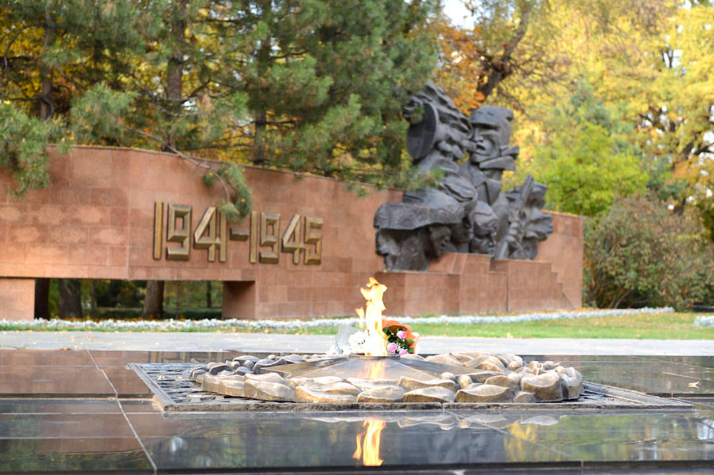

Парк им. 28 гвардейцев-панфиловцев находится в Медеуском районе Алматы и занимает территорию порядка 18 га.
Свое название он получил весной 1942 года, был создан в честь Панфиловской дивизии и героев города, которые остановили наступление фашистов на Москву. Всем мужественным жителям города, павшим в борьбе за свободу, присвоено звание Героя Советского Союза.
В восточной части возвышается Музей народных инструментов и Дом офицеров, мемориал Слава с Вечным огнем и Памятник воинам-интернационалистам. Открытие комплекса прошло 8 мая 1975 года в честь 30-летнего юбилея Победы.
Мемориал представляет собой горельеф «Клятва», который посвящен тем, кто сражался за Советскую власть. В центре находятся образы героев-панфиловцев, защищавших Москву, с правой стороны возвышается композиция «Трубящие славу», она символизирует гимн торжествующей жизни. Рядом с Вечным огнем находятся огромные кубы из лабрадорита, под ними замурованы капсулы с землей городов-героев.
С западной стороны мемориала есть аллея с тянь-шаньскими елями, которые были посажены президентами разных стран, посетившими Казахстан в период объявления независимости, с южной стороны стоит памятник-бюст герою СССР, генерал-майору гвардии Панфилову. К северу от мемориала, вдоль Аллеи памяти стоят каменные тумбы с именами 28 героев-панфиловцев.
В северной части парка возвышается памятник Бауржану Момыш-улы, в западной части можно увидеть памятник-бюст Токашу-Бокину. Все дороги парка пересекаются в центре и ведут к Свято-Вознесенскому Кафедральному собору.